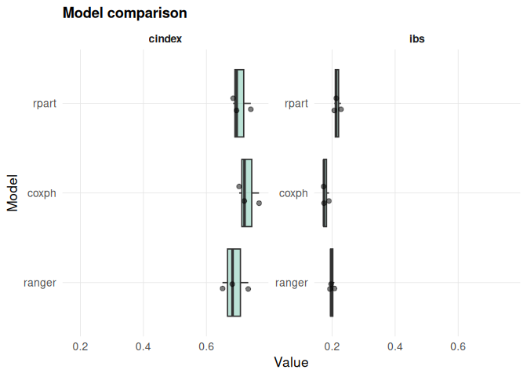

Unified survival machine learning and interpretability in R.
survalis provides a unified framework for survival machine learning in R. It supports 22 learners, evaluation metrics, cross-validation, benchmarking, and model-agnostic interpretability methods through a common survival-probability matrix (survmat) interface.
survalis is available on CRAN: https://CRAN.R-project.org/package=survalis.
The seven-verb interface
library(survalis)
f <- Surv(time, status) ~ age + karno + celltype
m <- fit(f, veteran, model = "ranger", spec = list(num.trees = 500))
predict(m, veteran[1:5, ], times = c(90, 180, 365)) # survmat
evaluate(m, times = c(90, 180, 365), resampling = cv(5)) # resampled metrics
cmp <- compare(f, veteran, models = c("coxph", "ranger", "densemlp"),
times = c(90, 180, 365))
plot(cmp)
plot(interpret(m, "shap", newdata = veteran[1, ], times = 180))
estimate(f, veteran, model = "ranger", treatment = "trt", tau = 365)fit() / predict() / evaluate() / tune() / compare() / interpret() / estimate() cover the whole workflow. The granular fit_*() / predict_*() / compute_*() / benchmark*() functions remain available as the low-level layer; see vignette("from-1.0", package = "survalis") and ?"survalis-lowlevel".
Installation
# Install the released version from CRAN
install.packages("survalis")
# Or install the development version from GitHub
remotes::install_github("ielbadisy/survalis")New in version 1.1.0
Version 1.1.0 adds a set of downstream tools that work with the same fitted models and survmat predictions used throughout the package:
-
screen_fdr()performs univariate Cox screening with Benjamini-Hochberg FDR control and an optional minimum-screen guarantee. -
estimate_rmst()andplot_rmst()estimate standardized marginal RMST or a two-group RMST contrast with percentile-bootstrap intervals. -
compute_shap_matrix()andplot_shap_beeswarm()summarize time-integrated SHAP contributions across observations. -
roc_survmat()anddca_survmat()provide IPCW time-dependent ROC and decision-curve analyses, withplot_roc()andplot_dca()helpers.
# FDR screening
selected <- screen_fdr(
Surv(time, status) ~ age + karno + diagtime + prior,
data = veteran,
alpha = 0.1,
minscreen = 2
)
# Standardized RMST contrast between treatment groups
rmst <- estimate_rmst(
mod_cox,
data = veteran,
tau = 200,
times = seq(10, 300, by = 10),
trt_col = "trt",
R = 200,
seed = 1
)
# Time-dependent ROC and decision curves from survmat predictions
pred_100 <- predict_coxph(mod_cox, veteran, times = 100)
roc <- roc_survmat(Surv(veteran$time, veteran$status), pred_100, t_star = 100)
dca <- dca_survmat(Surv(veteran$time, veteran$status), pred_100, t_star = 100)
plot_roc(roc)
plot_dca(dca)Core philosophy
- Seven verbs cover the whole workflow:
fit(),predict(),evaluate(),tune(),compare(),interpret(),estimate() - Every learner returns a standardized
survalis_fit(amlsurv_modelsubclass) - Matrix predictions return a
survmat: columnst=100,t=200, …, with the grid recorded inattr(x, "times") - Evaluation is fully modular: any learner id works with
evaluate()/compare()under anycv()/holdout()/group_cv()/bootstrap()resampling - Designed for interpretability post prediction, through a single
interpret()entry point
Exploring the package
List all available survival learners
library(survalis)
# See all available learners
list_survlearners()
#> learner fit predict tune
#> 1 coxph fit_coxph predict_coxph <NA>
#> 2 aalen fit_aalen predict_aalen <NA>
#> 3 glmnet fit_glmnet predict_glmnet tune_glmnet
#> 4 selectcox fit_selectcox predict_selectcox tune_selectcox
#> 5 aftgee fit_aftgee predict_aftgee <NA>
#> 6 flexsurvreg fit_flexsurvreg predict_flexsurvreg tune_flexsurvreg
#> 7 bnnsurv fit_bnnsurv predict_bnnsurv tune_bnnsurv
#> 8 rpart fit_rpart predict_rpart tune_rpart
#> 9 bart fit_bart predict_bart tune_bart
#> 10 xgboost fit_xgboost predict_xgboost tune_xgboost
#> 11 coxboost fit_coxboost predict_coxboost tune_coxboost
#> 12 fastgbm fit_fastgbm predict_fastgbm <NA>
#> 13 ranger fit_ranger predict_ranger tune_ranger
#> 14 rsf fit_rsf predict_rsf tune_rsf
#> 15 cforest fit_cforest predict_cforest tune_cforest
#> 16 blackboost fit_blackboost predict_blackboost tune_blackboost
#> 17 survsvm fit_survsvm predict_survsvm tune_survsvm
#> 18 densemlp fit_densemlp predict_densemlp <NA>
#> 19 orsf fit_orsf predict_orsf tune_orsf
#> 20 rpsurv fit_rpsurv predict_rpsurv <NA>
#> 21 nbsurv fit_nbsurv predict_nbsurv <NA>
#> 22 survmetalearner fit_survmetalearner predict_survmetalearner <NA>
#> has_fit has_predict has_tune available
#> 1 TRUE TRUE FALSE TRUE
#> 2 TRUE TRUE FALSE TRUE
#> 3 TRUE TRUE TRUE TRUE
#> 4 TRUE TRUE TRUE TRUE
#> 5 TRUE TRUE FALSE TRUE
#> 6 TRUE TRUE TRUE TRUE
#> 7 TRUE TRUE TRUE TRUE
#> 8 TRUE TRUE TRUE TRUE
#> 9 TRUE TRUE TRUE TRUE
#> 10 TRUE TRUE TRUE TRUE
#> 11 TRUE TRUE TRUE TRUE
#> 12 TRUE TRUE FALSE TRUE
#> 13 TRUE TRUE TRUE TRUE
#> 14 TRUE TRUE TRUE TRUE
#> 15 TRUE TRUE TRUE TRUE
#> 16 TRUE TRUE TRUE TRUE
#> 17 TRUE TRUE TRUE TRUE
#> 18 TRUE TRUE FALSE TRUE
#> 19 TRUE TRUE TRUE TRUE
#> 20 TRUE TRUE FALSE TRUE
#> 21 TRUE TRUE FALSE TRUE
#> 22 TRUE TRUE FALSE TRUE
# See only tunable learners (those with a tune_* function)
list_survlearners(has_tune = TRUE)
#> learner fit predict tune has_fit
#> 3 glmnet fit_glmnet predict_glmnet tune_glmnet TRUE
#> 4 selectcox fit_selectcox predict_selectcox tune_selectcox TRUE
#> 6 flexsurvreg fit_flexsurvreg predict_flexsurvreg tune_flexsurvreg TRUE
#> 7 bnnsurv fit_bnnsurv predict_bnnsurv tune_bnnsurv TRUE
#> 8 rpart fit_rpart predict_rpart tune_rpart TRUE
#> 9 bart fit_bart predict_bart tune_bart TRUE
#> 10 xgboost fit_xgboost predict_xgboost tune_xgboost TRUE
#> 11 coxboost fit_coxboost predict_coxboost tune_coxboost TRUE
#> 13 ranger fit_ranger predict_ranger tune_ranger TRUE
#> 14 rsf fit_rsf predict_rsf tune_rsf TRUE
#> 15 cforest fit_cforest predict_cforest tune_cforest TRUE
#> 16 blackboost fit_blackboost predict_blackboost tune_blackboost TRUE
#> 17 survsvm fit_survsvm predict_survsvm tune_survsvm TRUE
#> 19 orsf fit_orsf predict_orsf tune_orsf TRUE
#> has_predict has_tune available
#> 3 TRUE TRUE TRUE
#> 4 TRUE TRUE TRUE
#> 6 TRUE TRUE TRUE
#> 7 TRUE TRUE TRUE
#> 8 TRUE TRUE TRUE
#> 9 TRUE TRUE TRUE
#> 10 TRUE TRUE TRUE
#> 11 TRUE TRUE TRUE
#> 13 TRUE TRUE TRUE
#> 14 TRUE TRUE TRUE
#> 15 TRUE TRUE TRUE
#> 16 TRUE TRUE TRUE
#> 17 TRUE TRUE TRUE
#> 19 TRUE TRUE TRUE
# Shortcut for tunable learners
list_tunable_survlearners()
#> learner fit predict tune has_fit
#> 3 glmnet fit_glmnet predict_glmnet tune_glmnet TRUE
#> 4 selectcox fit_selectcox predict_selectcox tune_selectcox TRUE
#> 6 flexsurvreg fit_flexsurvreg predict_flexsurvreg tune_flexsurvreg TRUE
#> 7 bnnsurv fit_bnnsurv predict_bnnsurv tune_bnnsurv TRUE
#> 8 rpart fit_rpart predict_rpart tune_rpart TRUE
#> 9 bart fit_bart predict_bart tune_bart TRUE
#> 10 xgboost fit_xgboost predict_xgboost tune_xgboost TRUE
#> 11 coxboost fit_coxboost predict_coxboost tune_coxboost TRUE
#> 13 ranger fit_ranger predict_ranger tune_ranger TRUE
#> 14 rsf fit_rsf predict_rsf tune_rsf TRUE
#> 15 cforest fit_cforest predict_cforest tune_cforest TRUE
#> 16 blackboost fit_blackboost predict_blackboost tune_blackboost TRUE
#> 17 survsvm fit_survsvm predict_survsvm tune_survsvm TRUE
#> 19 orsf fit_orsf predict_orsf tune_orsf TRUE
#> has_predict has_tune available
#> 3 TRUE TRUE TRUE
#> 4 TRUE TRUE TRUE
#> 6 TRUE TRUE TRUE
#> 7 TRUE TRUE TRUE
#> 8 TRUE TRUE TRUE
#> 9 TRUE TRUE TRUE
#> 10 TRUE TRUE TRUE
#> 11 TRUE TRUE TRUE
#> 13 TRUE TRUE TRUE
#> 14 TRUE TRUE TRUE
#> 15 TRUE TRUE TRUE
#> 16 TRUE TRUE TRUE
#> 17 TRUE TRUE TRUE
#> 19 TRUE TRUE TRUEList interpretability tools
# List available interpretability methods
list_interpretability_methods()
#> compute plot has_compute
#> compute_shap compute_shap plot_shap TRUE
#> compute_pdp compute_pdp plot_pdp TRUE
#> compute_ale compute_ale plot_ale TRUE
#> compute_surrogate compute_surrogate plot_surrogate TRUE
#> compute_tree_surrogate compute_tree_surrogate plot_tree_surrogate TRUE
#> compute_varimp compute_varimp plot_varimp TRUE
#> compute_interactions compute_interactions plot_interactions TRUE
#> compute_counterfactual compute_counterfactual plot_counterfactual TRUE
#> compute_shap_matrix compute_shap_matrix plot_shap_beeswarm TRUE
#> compute_survcluster compute_survcluster plot_survcluster TRUE
#> has_plot
#> compute_shap TRUE
#> compute_pdp TRUE
#> compute_ale TRUE
#> compute_surrogate TRUE
#> compute_tree_surrogate TRUE
#> compute_varimp TRUE
#> compute_interactions TRUE
#> compute_counterfactual TRUE
#> compute_shap_matrix TRUE
#> compute_survcluster TRUE
# Show which compute_* methods have a plot_* counterpart
subset(list_interpretability_methods(), !is.na(plot))
#> compute plot has_compute
#> compute_shap compute_shap plot_shap TRUE
#> compute_pdp compute_pdp plot_pdp TRUE
#> compute_ale compute_ale plot_ale TRUE
#> compute_surrogate compute_surrogate plot_surrogate TRUE
#> compute_tree_surrogate compute_tree_surrogate plot_tree_surrogate TRUE
#> compute_varimp compute_varimp plot_varimp TRUE
#> compute_interactions compute_interactions plot_interactions TRUE
#> compute_counterfactual compute_counterfactual plot_counterfactual TRUE
#> compute_shap_matrix compute_shap_matrix plot_shap_beeswarm TRUE
#> compute_survcluster compute_survcluster plot_survcluster TRUE
#> has_plot
#> compute_shap TRUE
#> compute_pdp TRUE
#> compute_ale TRUE
#> compute_surrogate TRUE
#> compute_tree_surrogate TRUE
#> compute_varimp TRUE
#> compute_interactions TRUE
#> compute_counterfactual TRUE
#> compute_shap_matrix TRUE
#> compute_survcluster TRUEList evaluation metrics
# List available metrics used in cross-validation and scoring
list_metrics()
#> metric direction
#> 1 cindex maximize
#> 2 auc maximize
#> 3 brier minimize
#> 4 ibs minimize
#> 5 iae minimize
#> 6 ise minimize
#> 7 ece minimize
#> summary
#> 1 Harrell-style concordance index for survival predictions.
#> 2 Cumulative/dynamic time-dependent AUC at a selected evaluation time.
#> 3 Brier Score at specified evaluation time(s) (IPCW-weighted when needed).
#> 4 Integrated Brier Score over an evaluation time grid (IPCW-weighted).
#> 5 Integrated absolute error against the Kaplan-Meier curve.
#> 6 Integrated squared error against the Kaplan-Meier curve.
#> 7 Expected calibration error at a single evaluation time.
#> range
#> 1 [0, 1] (higher is better)
#> 2 [0, 1] (higher is better)
#> 3 [0, 1] (lower is better)
#> 4 [0, 1] (lower is better)
#> 5 [0, Inf) (lower is better)
#> 6 [0, Inf) (lower is better)
#> 7 [0, 1] (lower is better)Basic Workflow
1. Fit a model
mod_cox <- fit(Surv(time, status) ~ age + karno + celltype, veteran, model = "coxph")
mod_cox
#> <survalis_fit> model = coxph (engine: survival)
#> formula: Surv(time, status) ~ age + karno + celltype
#> data: 137 obs, 128 events (93%)2. Predict survival probabilities
pred <- predict(mod_cox, newdata = veteran[1:5, ], times = c(100, 200))
pred
#> <survmat> survival | 5 obs x 2 times [100, 200]
#> t=100 t=200
#> [1,] 0.6142681 0.3541697
#> [2,] 0.6944383 0.4599242
#> [3,] 0.5556797 0.2860796
#> [4,] 0.6033305 0.3408724
#> [5,] 0.6959633 0.4620783predict() also returns other quantities via type: "risk" (1 - S(t)), "chf", "hazard", "rmst", "quantile", "median".
3. Evaluate model performance
ev <- evaluate(mod_cox, times = c(80, 160), resampling = cv(5, seed = 123))
ev
#> <survalis_eval> model = coxph
#> <survalis_resampling> 5-fold CV, strata = status, seed = 123
#> grid: 2 times in [80, 160]
#> cindex 0.7180 (sd 0.0530, 95% [0.6720, 0.7640], n = 5)
#> ibs 0.1820 (sd 0.0420, 95% [0.1460, 0.2190], n = 5)
summary(ev)
#> metric mean sd n se lower upper
#> 1 cindex 0.718 0.053 5 0.023 0.672 0.764
#> 2 ibs 0.182 0.042 5 0.019 0.146 0.2194. Compare multiple learners
compare() evaluates every learner on the same resampling folds, so results are paired; tune = TRUE tunes each tunable learner first.
cmp <- compare(
Surv(time, status) ~ age + karno + celltype,
data = veteran,
models = c("coxph", "rpart", "ranger"),
times = c(80, 160),
resampling = cv(3, seed = 1)
)
cmp
#> <survalis_compare> 3 models
#> <survalis_resampling> 3-fold CV, strata = status, seed = 1
#>
#> cindex (higher is better):
#> * coxph 0.7307 (se 0.0188)
#> rpart 0.7073 (se 0.0171)
#> ranger 0.6890 (se 0.0239)
#>
#> ibs (lower is better):
#> * coxph 0.1790 (se 0.0055)
#> ranger 0.1990 (se 0.0042)
#> rpart 0.2160 (se 0.0062)
plot(cmp)
5. Kaplan-Meier curves
plot_survcurve() produces a styled Kaplan-Meier curve with a confidence ribbon, log-rank p-value, and an aligned number-at-risk table, in the spirit of survminer::ggsurvplot() but implemented natively (no dependency on survminer).
plot_survcurve(Surv(time, status) ~ trt, data = veteran)
#> Warning: Removed 2 rows containing missing values or values outside the scale range
#> (`geom_ribbon()`).
6. Visualize interpretation
interpret() is the single entry point to every explanation method; its plot() dispatches to the matching plot_*() helper.
shap_meanabs <- interpret(
mod_cox, "shap",
newdata = veteran[100, ],
times = 80,
sample.size = 50,
aggregate = TRUE,
shap_method = "meanabs"
)
as.data.frame(shap_meanabs)
#> feature phi
#> trt trt 0.000000000
#> celltype celltype 0.017380404
#> karno karno 0.019501719
#> diagtime diagtime 0.000000000
#> age age 0.001231928
#> prior prior 0.000000000
plot(shap_meanabs)
More interpretability methods
survalis also provides PDP, ALE, surrogate explanations, tree surrogates, permutation importance, interaction analysis, and counterfactuals – all through interpret(fit, method = ..., ...).
Partial dependence and ICE
pdp_age <- interpret(mod_cox, "pdp", feature = "age", times = c(100, 200, 300))
plot(pdp_age, which = "per_time")
plot(pdp_age, which = "integrated", smooth = TRUE)
#> `geom_smooth()` using formula = 'y ~ x'
Accumulated local effects
ale_karno <- interpret(mod_cox, "ale", feature = "karno", times = c(100, 200, 300))
plot(ale_karno, which = "per_time")
plot(ale_karno, which = "integrated", smooth = TRUE)
#> `geom_smooth()` using formula = 'y ~ x'
Local surrogate explanation
local_surrogate <- interpret(
mod_cox, "surrogate",
newdata = veteran[1, , drop = FALSE],
times = c(100, 200, 300),
target_time = 200,
k = 5
)
as.data.frame(local_surrogate)
#> feature feature_value effect target_time
#> 1 karno 60 0.491034890 200
#> 2 celltype squamous 0.189632633 200
#> 3 age 69 0.120729843 200
#> 4 diagtime 7 0.001800378 200
#> 5 prior 0 0.000000000 200
plot(local_surrogate, top_n = 10)
Tree surrogate
tree_surrogate <- interpret(mod_cox, "tree_surrogate", times = c(100, 200, 300))
plot(tree_surrogate, type = "importance", top_n = 5)
# plot(tree_surrogate, type = "tree")Permutation variable importance
varimp_res <- interpret(
mod_cox, "varimp",
times = c(100, 200, 300),
metric = "ibs",
n_repetitions = 5,
seed = 123
)
as.data.frame(varimp_res)
#> # basetable: 6 x 5
#> feature importance importance_05 importance_95 scaled_importance
#> 1 karno 0.0672 0.0494 0.0826 100.00000
#> 2 celltype 0.0468 0.0394 0.0574 69.64286
#> 3 age -0.0022 -0.0030 -0.0012 3.27381
#> 4 trt 0.0000 0.0000 0.0000 0.00000
#> 5 diagtime 0.0000 0.0000 0.0000 0.00000
#> 6 prior 0.0000 0.0000 0.0000 0.00000
plot(varimp_res)
Feature interactions
interaction_1way <- interpret(mod_cox, "interaction", times = c(100, 200, 300),
target_time = 200, type = "1way")
interaction_heatmap <- interpret(mod_cox, "interaction", times = c(100, 200, 300),
target_time = 200, type = "heatmap")
interaction_time <- interpret(mod_cox, "interaction", times = c(100, 200, 300),
type = "time")
plot(interaction_1way, type = "1way")
plot(interaction_heatmap, type = "heatmap")
plot(interaction_time, type = "time")
Counterfactual explanations
counterfactuals <- interpret(
mod_cox, "counterfactual",
newdata = veteran[1, , drop = FALSE],
times = c(100, 200, 300),
target_time = 200,
features_to_change = c("age", "karno", "diagtime"),
cost_penalty = 0.01
)
as.data.frame(counterfactuals)
#> feature original_value suggested_value survival_gain change_cost
#> 1 karno 60 81.0202 0.2347 21.0202
#> 2 diagtime 7 7.0808 0.0000 0.0808
#> 3 age 69 69.1313 0.0003 0.1313
#> penalized_gain
#> 1 0.0245
#> 2 -0.0008
#> 3 -0.00107. Calibration

Citation
citation("survalis")
#> To cite survalis in publications, use:
#>
#> El Badisy I (2026). _survalis: Interpretable Survival Machine
#> Learning Framework_. R package version 1.7.0,
#> <https://CRAN.R-project.org/package=survalis>.
#>
#> A BibTeX entry for LaTeX users is
#>
#> @Manual{,
#> title = {survalis: Interpretable Survival Machine Learning Framework},
#> author = {Imad {El Badisy}},
#> year = {2026},
#> note = {R package version 1.7.0},
#> url = {https://CRAN.R-project.org/package=survalis},
#> }